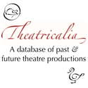

 “I have always been interested in the hustle and bustle of the theatre, such as everything that goes on literally behind the scenes in the weeks and months before in order to make the work of art that I see as a member of the audience on a particular night. It's one of the reasons I set up Theatricalia, to record details of as many productions as possible, letting people see the history of people, places, and productions as they each move through the theatre world.
“With the advent of the World Shakespeare Festival, I thought it would be interesting to be able to see an overview of the productions involved in the Festival across the country. As I'm a web developer by profession, I naturally wanted this to be a website-based data visualisation – one that as well as an animation showing the overview, allowed people to interact with it and find out more information about the events covered.
“From the Shipwreck Trilogy in Stratford-upon-Avon and London at the Roundhouse, Forests at the Birmingham Rep, or Y Storm (The Tempest) at the National Eisteddfod of Wales, my work provides a summary of the Festival productions and associated events.
— Matthew Somerville, project developer
“The World Shakespeare Festival toured throughout the UK during the summer of 2012 and we wanted to find a way of looking at that journey – creating something exciting and dynamic from our spreadsheet of numbers.
“The starting point for the commission was our performance data, lists of numbers, dates, times, locations, venues, performances and repertoire. What we needed to find from the individual figures was a sense of the whole, a way of representing the involvement of the cities and towns from Edinburgh to Brighton and everything in between.
“We were also keen to open up the data and share with those who had been involved in certain productions or locations a way of seeing how their experience was related to the wider festival. In this commission you can see how productions moved around, for example from Stratford to London and back again, and also the spread of locations and environments the productions performed in. The timeline charts the festival, as more blobs appear the busier we get and it's a real reminder of the task we undertook this year.
“Matthew has really brought to life our data, it's amazing to see all the clocks whirling over the map, popping up in so many places.”
— Vicki Pickin, Programming Team, RSC
Quintessence of Dust was made by Matthew Somerville, as one of three Caper commissions for myShakespeare. myShakespeare was produced in 2012 by The Royal Shakespeare Company on the occasion of the World Shakespeare Festival, which the company is producing on behalf of the London Organising Committee of the Olympic Games and Paralympic Games Ltd.
The source code is available on GitHub. Quintessence of Dust uses the following libraries: Raphaël (vector drawing), a tiny Raphaël popup library found on a helpful map tutorial (modified to allow direction override), jQuery, jQuery UI and selectToUISlider (slider, modified for different tooltip and month labels), Twitter Bootstrap (icons, buttons, tooltips), and UglifyJS (to make everything smaller).
Map design by Stamen Design, under CC BY 3.0. Data by OpenStreetMap, under CC BY SA.
Matthew Somerville is a web developer based in Birmingham, working for mySociety on sites such as FixMyStreet and TheyWorkForYou. After finding it hard to discover what other productions the brilliant actors of the RSC Histories Cycle had been in, he set up Theatricalia as an open, editable, repository of theatre productions. It currently contains over 24,000 productions, dating back to the sixteenth century production of Julius Caesar at the Globe.